After doing The
Incomparable, I had to go see what I could do with Relay.fm’s data as well, naturally.
So this is the beginning of that. The source code is included in this repo, and, in
case anyone asks:
Yes, you can use these graphs for whatever. Maybe link back to me, that
would be cool.
Please note that there’s probably still stuff coming.
Relay.fm spans 49 shows and a combined runtime of over 306 days spread across 6945 episodes since 2014.
In 2021, there were 759 episodes published, and we’re currently about 82.1% of the way there at 623 episodes this year.
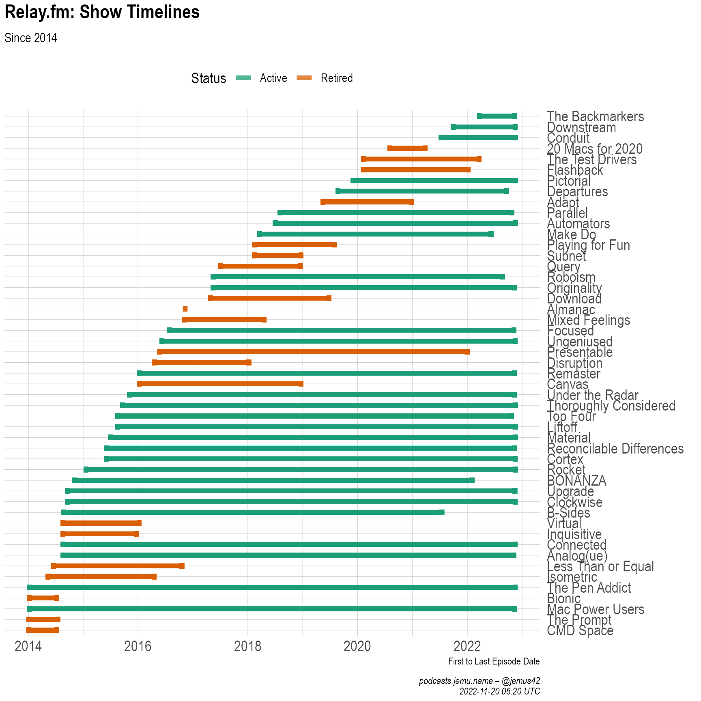
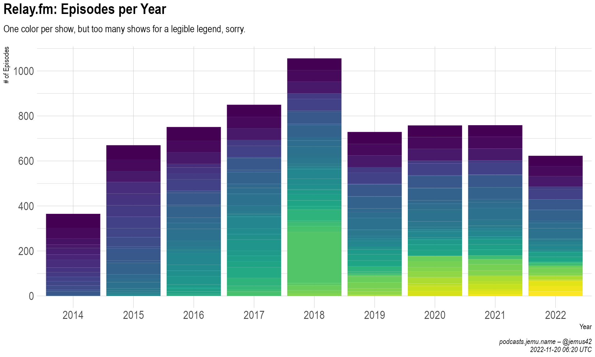
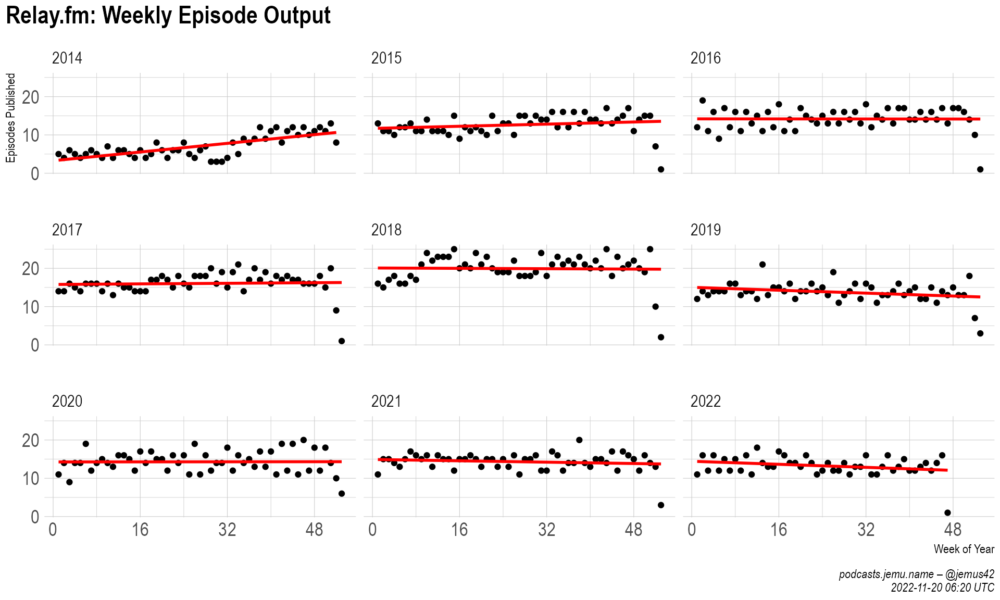
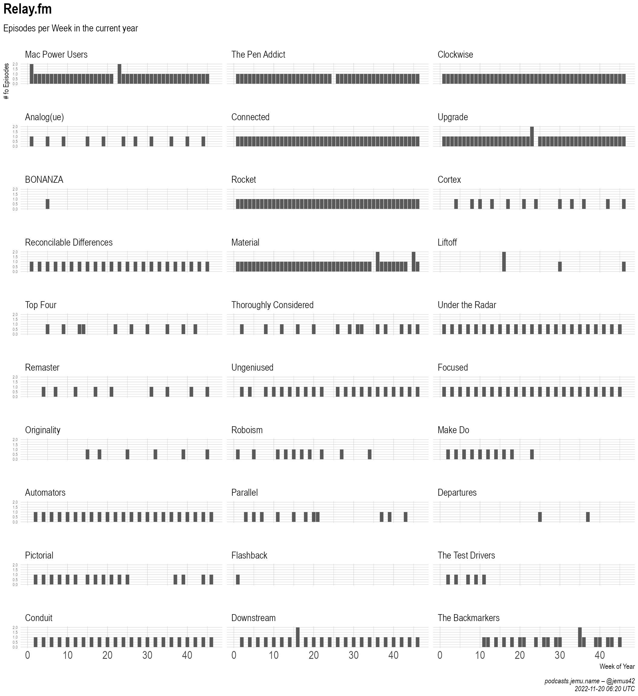
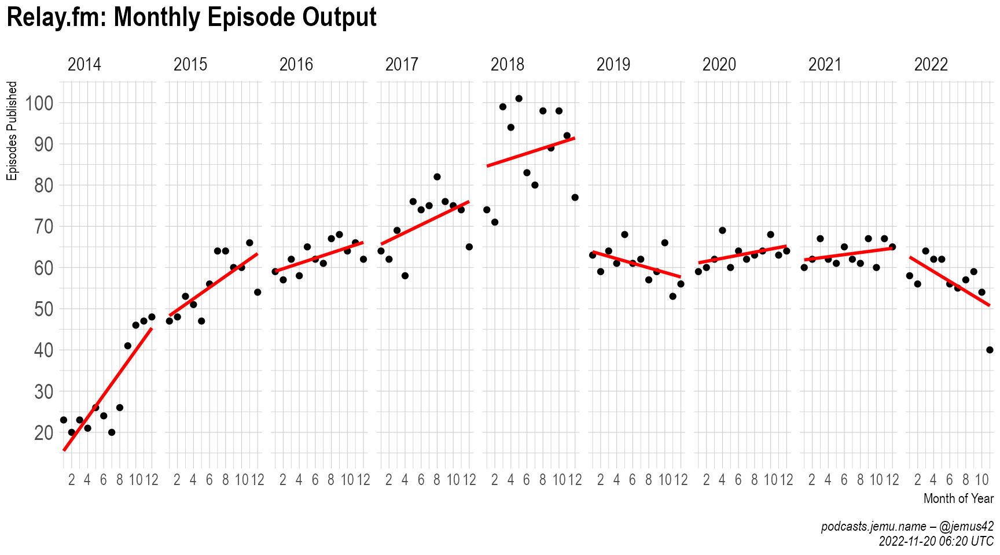
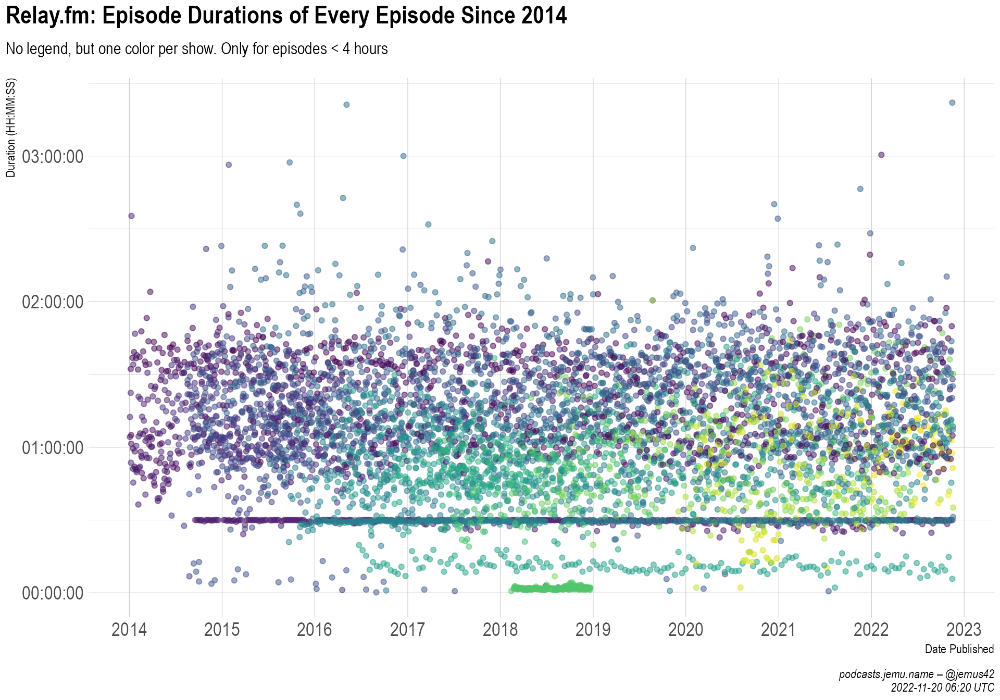
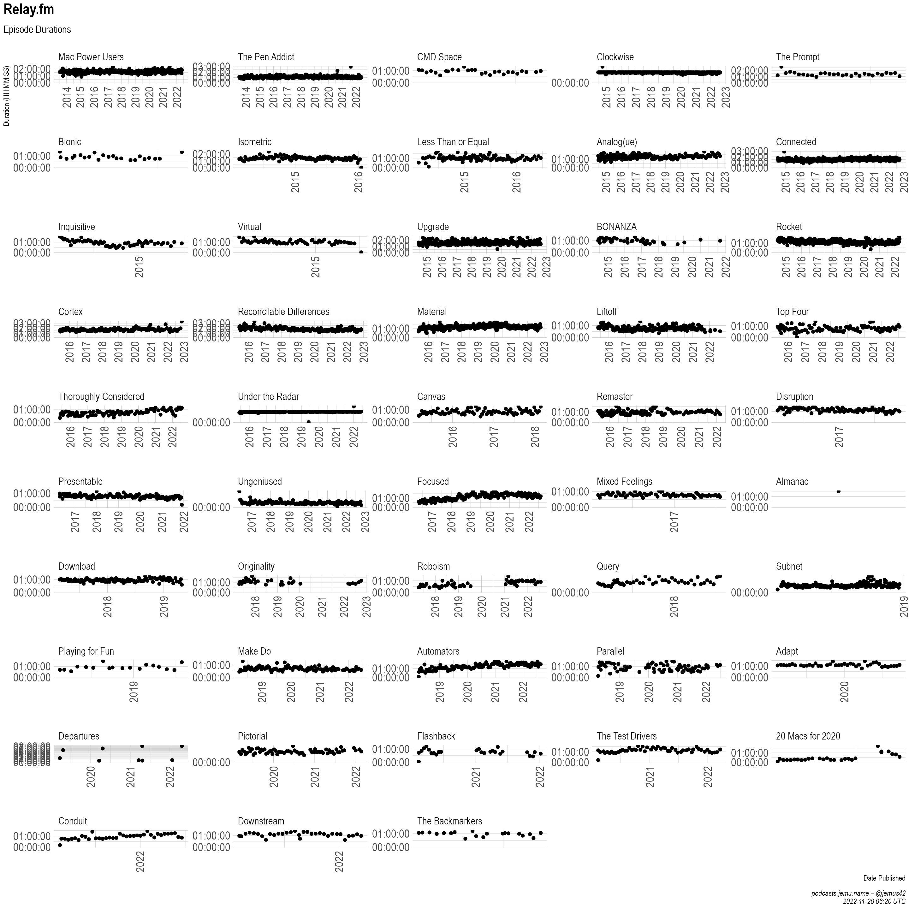
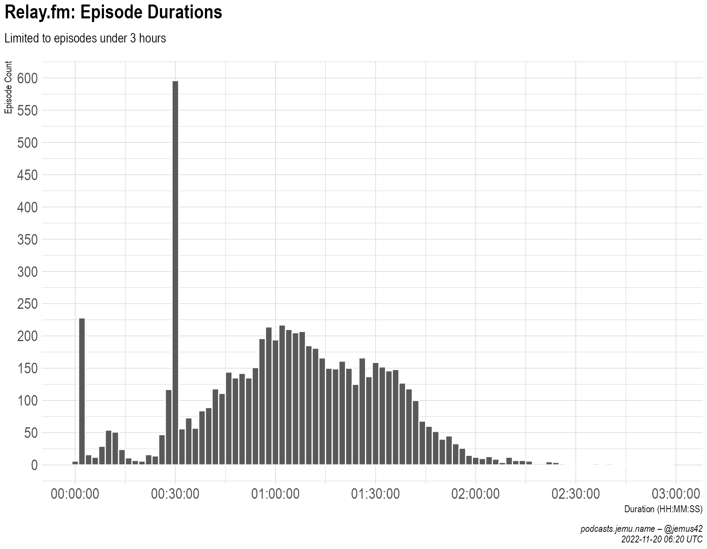
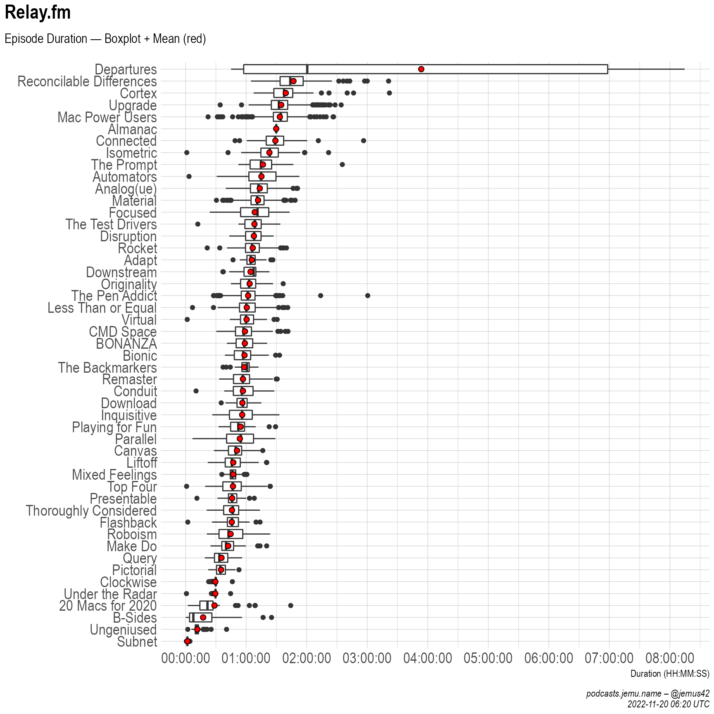
Sadly I don’t have a lot of data about people besides the hosts of
each show. I could try to pry out the guests of shows out of
each show’s RSS feed, but sadly this information is not neatly presented
in the feed, but rather would require an amount of regexing I am not
prepared, and therefore not able to do.
Be that as it may, here’s a bit about the hosts.
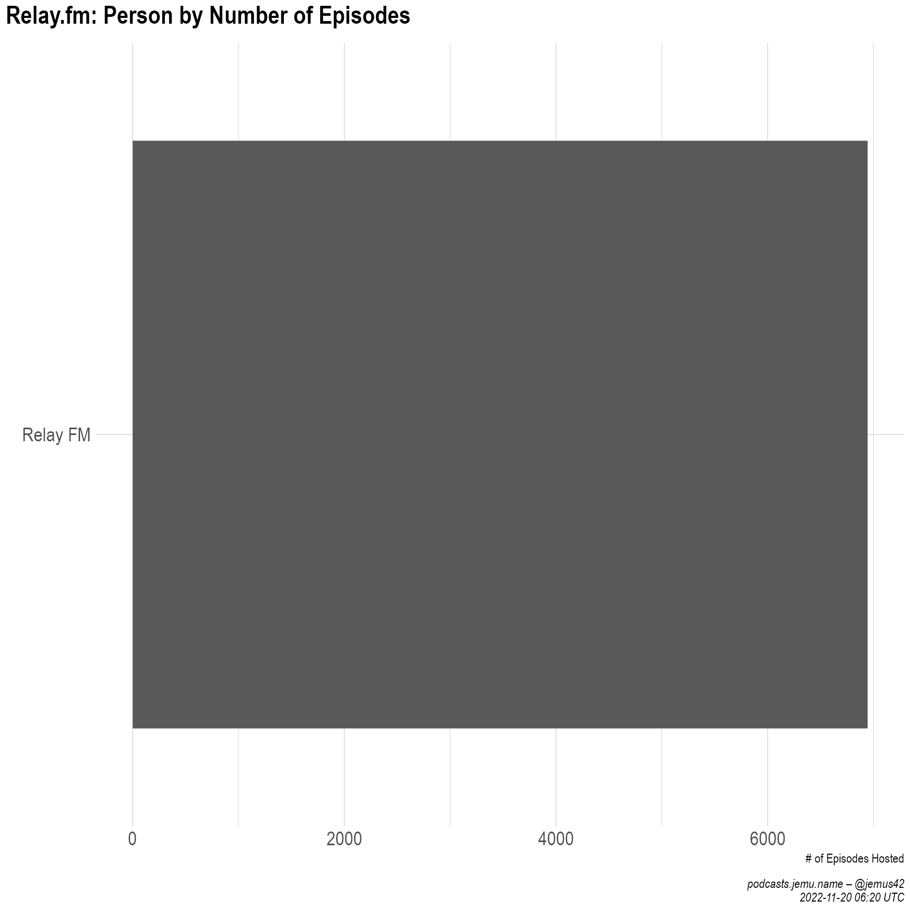
Sooo okay! Filtered by episodes aireing in 2014 or later though.
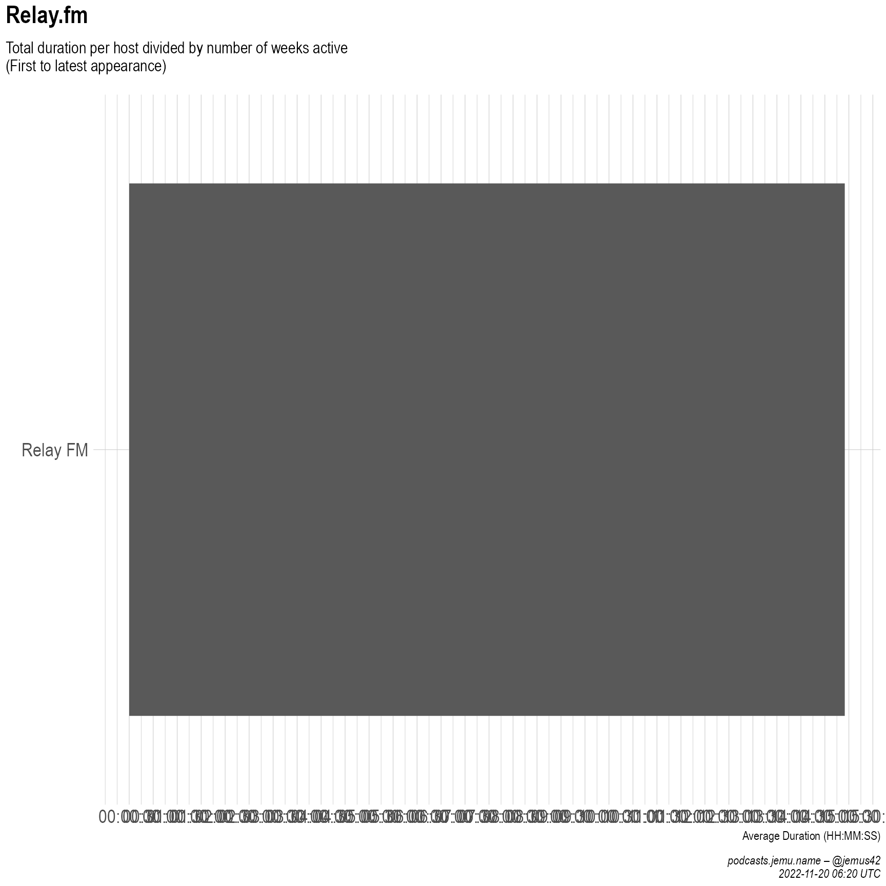
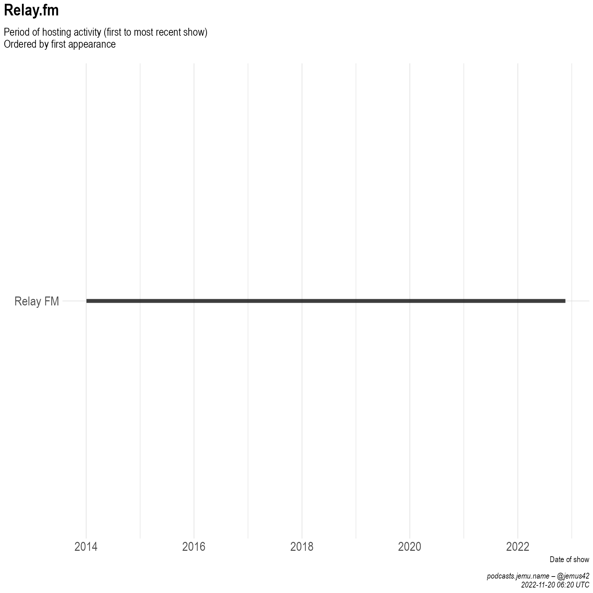